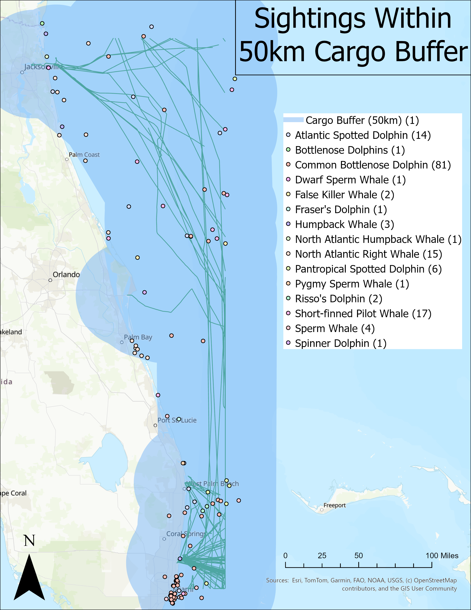
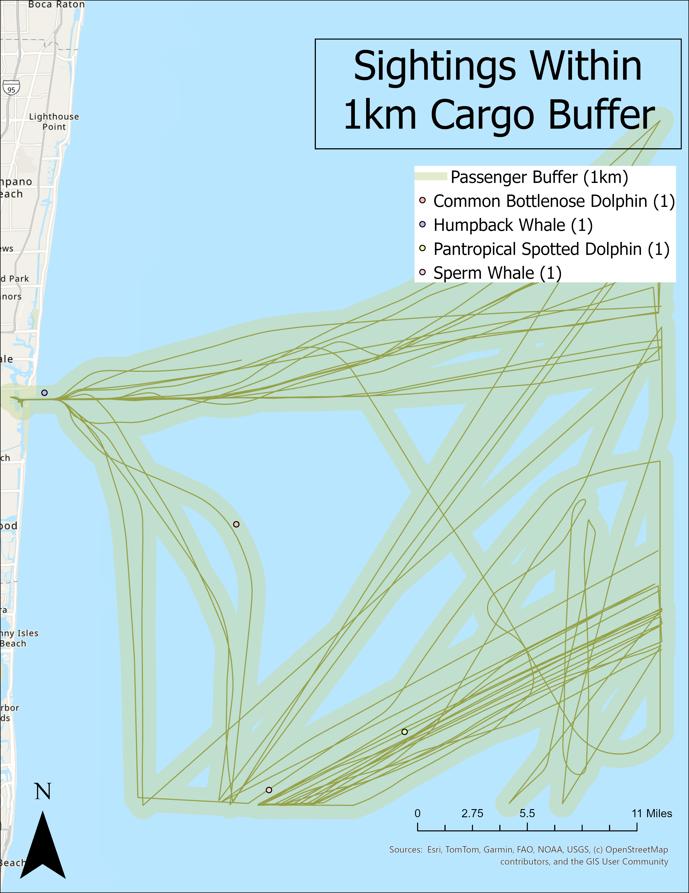
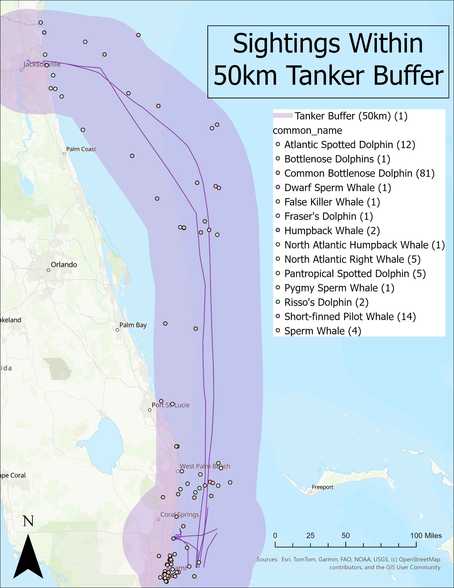

While we may consider being underwater to be a time of peaceful silence, the undersea environment is flush with constant noise. From acoustic communication between species to the ambient movement of the waves or the patter of raindrops on the surface, marine audiograms show a very loud world under the sea.
Though, as with most environments in our Anthropocenic age, this is natural order is not without its human interruption. Increasingly, the presence of human activity, ranging from ships to undersea mining, is undeniable in the ocean's soundscape. With how vital long-range acoustic communication is to many species, most recognizably those like the whales and dolphins which make up the cetacean infraorder, the human interruption poses a significant problem.
Humans have begun polluting the intangible. Noise pollution is an increasing area of concern for marine research given the prevalence of maritime trade, travel, and leisure.
In the above map, the total overlap of the modeled impact of sound, as represented here with frequency-dependent buffers, and cetacean sightings an be observed. For the lower frequency vessel classes, cargo and tanker, 50km buffers were created, while the highest frequency passenger class possessed a 1km buffer by comparison. Of the total 163 observed sightings, 150 lay within range of the proposed sound-risk area.



Overall, the most abundant vessel class, the cargo ships, were also the ones which affected the highest number of cetaceans. Of the 150 total cetaceans who fell within any buffer, all were within the range of the 50km sound barrier from a cargo ship, a threshold at which behavioral changes have been observed in porpoises following extreme sounds in the vicinity.
The class with the smallest amount of cetaceans impacts, passenger ships, posessed both the lowest buffer size due to comparatively higher frequencies produced by the ship. Only 4 cetaceans were within the 1km buffer range of passenger class ships.
Cargo is an extremely lucrative industry, especially off of the coast of Florida where reported plans for expansion of the cargo shipping capacity are in motion, meaning that the potential adverse impact of sound on cetaceans within the area may only increase further in the future.